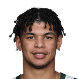

Jaylin Williams on Josh Giddey:
“Gidd’s my guy. He’ll forever be my guy.. I know he’s gone through a lot this year.. He was still a great teammate.. a great player.. I love playing with Gidd. He’s a great guy.”

5 quotes from Jaylin Williams about 5 other people around the NBA, newest first. Each one links to its original source.
Jaylin Williams on Josh Giddey:
“Gidd’s my guy. He’ll forever be my guy.. I know he’s gone through a lot this year.. He was still a great teammate.. a great player.. I love playing with Gidd. He’s a great guy.”
Clemente Almanza:Jaylin Williams on Ousmane Dieng:
“What I've been trying to tell Ous is to be more aggressive. When he's taking it to the paint, he doesn't play like he's 6'10 all the time. I tell him, 'Bro put your shoulder into him and score it.'... Play like how we know you can play.”
Joel Lorenzi:Jaylin Williams on Lu Dort:
“He’s a pure person, for sure. You look at Lu, you think he’s this tough guy that doesn’t talk to anybody, doesn’t joke around. … I thought Lu was gonna be this dude that didn’t talk to nobody. … He’s sending memes to our group chat.”

Ousmane Dieng1 quoteWilliams also thanked everyone for a great turn out.
“It means the world to Isaiah and me, the support we get from y'all, it makes me want to tear up,”
Jaylin Williams on Josh Giddey:
“Gidd’s my guy. He’ll forever be my guy.. I know he’s gone through a lot this year.. He was still a great teammate.. a great player.. I love playing with Gidd. He’s a great guy.”
Joel Lorenzi:Jaylin Williams on Lu Dort:
“He’s a pure person, for sure. You look at Lu, you think he’s this tough guy that doesn’t talk to anybody, doesn’t joke around. … I thought Lu was gonna be this dude that didn’t talk to nobody. … He’s sending memes to our group chat.”
Joel Lorenzi:Jaylin Williams on Vasa Micic:
“From the first day we saw him play basketball right before Summer League, we knew that he was a game manager.”
Clemente Almanza:Jaylin Williams on Ousmane Dieng:
“What I've been trying to tell Ous is to be more aggressive. When he's taking it to the paint, he doesn't play like he's 6'10 all the time. I tell him, 'Bro put your shoulder into him and score it.'... Play like how we know you can play.”